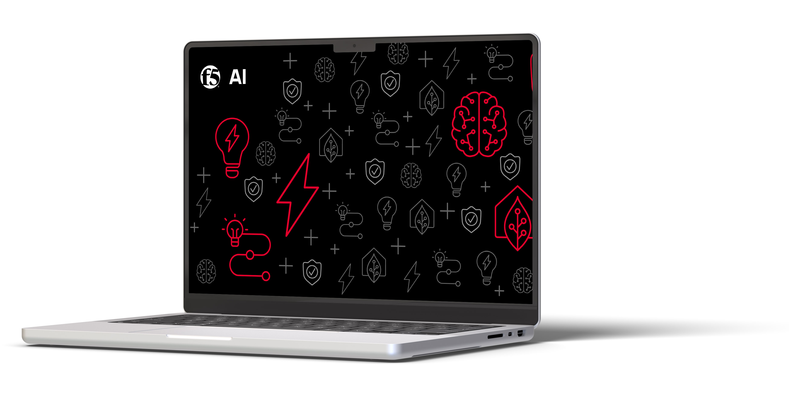

AI Program and Products
At F5, I led the creation of an AI program that united people, technology, and strategy to unlock the full potential of AI and drive innovation across the company.
AI Program

The AI Program was conceived to transform how F5 leverages AI. With a vision to embrace AI in a human-first way, the program aimed to enhance productivity, create innovative solutions, and optimize business operations.
Duration: March 2022 - Present
Role: Sr. Technical Program Manager
Key Achievements
- Established a clear strategy, governance frameworks, and adoption pathways for AI across F5.
- Aligned nine charters to ensure AI-driven success across the company.
- Engaged employees across 36 countries with education and training programs, elevating AI/ML competencies company-wide.
- Positioned F5 as a leader in AI-driven solutions through partnerships with Microsoft, Google, and AWS.
Outcome
F5’s AI Program transformed innovation and operations, delivering global impact and tangible results.
AI Product Delivery
The AI Program delivered several cutting-edge AI products that enhanced productivity, optimized operations, and drove innovation across the company.
Key Products
- F5 GPT: A secure, private-instance AI-powered service leveraging OpenAI’s technology to safely enhance productivity.
- AI Gateway: Optimized Generative AI workloads, ensuring secure and efficient operations.
- VectorBot: An AI-powered assistant for knowledgebase queries and debugging support.
Impact
These products showcased F5’s ability to innovate with AI, strengthening its position as a leader in AI-driven solutions.
AI Program Charter
The program was structured into nine interconnected charters to ensure alignment and success across F5.
- Data Engineering: Developed methods and access to data for building and running AI/ML prototypes.
- AI/ML Center of Excellence: Enabled engineers and data scientists to enhance their AI/ML skills with expert guidance.
- Technology & Architecture: Built reference architectures and sandboxes to support AI/ML prototypes.
- Talent Architecture: Focused on hiring top AI talent to ensure F5 had the necessary skills for AI-driven success.
- Communication: Enhanced F5’s AI narrative through media engagement, market updates, and content creation.
- Branding & Marketing: Positioned F5’s AI brand identity and brought AI products from program to market.
- Education & Training: Provided AI/ML training for employees in collaboration with Microsoft, Google, and Hugging Face.
- Sales & Customer Support: Developed strategies for sales enablement and post-sales support to drive AI product adoption.
- Innovation: Curated ideas, developed Proofs of Concept (PoCs), and deployed early-access AI solutions.